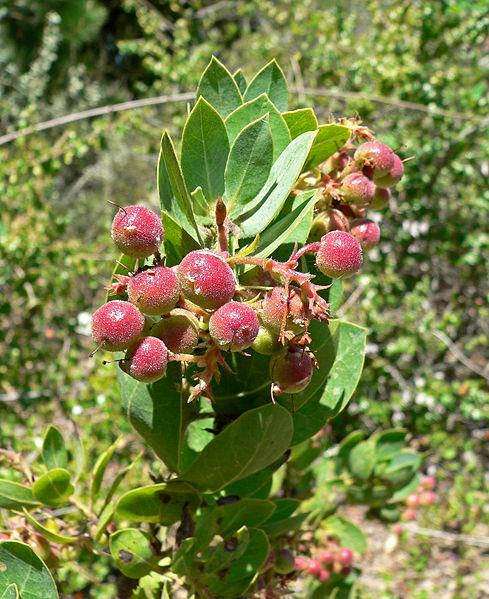

AI art generated from the text “Principal component analysis”
This section introduces an advanced exploratory data analysis method called Principal component analysis (PCA). PCA summarizes the information1 in data that is composed of multiple variables. Below is a scatterplot and correlation matrix of a dataset that consists of five variables. The scatterplot shows the pairwise relationships between the variables and they are useful for visualizing relationships, clusters, and outliers. The correlation matrix provides a numerical measure of the strength and direction of these relationships. This section only covers PCA on standardized data.
Figure 16.1: Example of a linear relationship with the estimated or best fit SLR line with the predicted values shown as black points on the line
Figure 16.2: Example of a linear relationship with the estimated or best fit SLR line with the predicted values shown as black points on the line
Graphical and numerical summaries show positive and negative correlations between variables, and the strength of the linear relationship between them depends on which pair of variables is considered. With nine variables, there are 10 possible 3D scatterplots to examine, making it challenging to explore relationships beyond pairwise comparisons. That is, when dealing with multiple variables, examining all possible pairwise relationships can be challenging, particularly in large datasets. Visualizing multidimensional relationships also becomes difficult as the number of variables increases, limiting the usefulness of graphical and numerical summaries. Therefore, more advanced exploratory data analysis methods, such as PCA may be needed to obtain meaningful insights from high-dimensional datasets.
PCA is a powerful and widely used technique for extracting dominant modes of variation from a dataset. The data must consist of only numerical variables. The goal of PCA is to identify directions (or principal components or modes of variation) along which the variation in the data are maximal. The dominant modes of variation in PCA correspond to the principal components that explain most of the variation in the dataset. Thus, a few principal components (PCs) may capture almost as much of the variation as the original variables. Such principal components capture the most important patterns or structures in the data. In some cases, the dominant modes of variation may be associated with specific features or facets in the data, allowing for a better understanding of the underlying variation processes that generates the data.
To better ensure that PCA provides meaningful results, several assumptions about about the data are recommended.
Data assumptions
PCA assumes assumption 1 and assumptions 2-4 are recommended for the data.
Assumption 1. Independence. The variables are independent of one another.
Assumption 2. Linearity. Variables should generally be linearly related to each other to some extent, with moderate to strong correlations between some variables. However, the degree of linearity required for meaningful results may depend on the specific goals of the analysis and the structure of the data. While PCA can still be performed on data that shows weak correlations between variables or non-linear relationships2, the identification of underlying features or facets in the data may be more difficult. In general, stronger correlations and linearity in the data can make it easier for PCA to provide informative and meaningful results.
Assumption 3. No clear outliers. The data should not contain any extreme or influential outliers that deviate significantly from the majority of the data3. The computations involved in PCA are dependent on the correlation matrix, and correlation is sensitive to outliers. This sensitivity can result in outliers having a large influence on the computed principal components, leading to misleading or incorrect interpretations of the underlying structure of the data. Therefore, it is important to identify and address any extreme or influential outliers before performing PCA to ensure that the results are accurate and reliable.
Assumption 4. Adequate sample. The larger the sample, the easier it may be to identify dominate modes of variations and meaningful structures in the data. There is no strict requirement for a minimum sample size for performing PCA, and various rules-of-thumb have been proposed, such as 5 to 10 cases per variable have been recommended as minimum sample sizes.
This module introduces PCA as an exploratory method, not an inferential approach. Although there are inferential methods for PCA, those are not discussed here and be aware that inference using PCA require additional assumptions about the data.
16.1 The method of PCA
It is difficult to describe the method of PCA without some prior knowledge of matrix algebra and linear operators, but a basic overview of the technique is provided. In the simplest terms, PCA is a statistical technique that creates linear combinations of the original data to summarize variation and reduce the dimensionality of the data. We start with some essential notation and definitions for the PCA:
Notation and definitions
We assume there are \(p\) variables and \(n\) observations so that \(x_{ij}\) denotes the i\(^{th}\) observed value under the j\(^{th}\) variable for \(i=1, ..., n\) and \(j=1, 2, .., p\). For example, \(x_{34}\) denotes the 3rd observed value under the 4th variable.
The i\(^{th}\) principal component (PC) is linear combination (weighted sum) of the variables, \(e_{i1} x_{1}+ e_{i2} x_{2} + e_{i3} x_{3} + \cdots + e_{ip} x_{p}\), and in total there will be \(p\) PCs. \(e_{i1}, e_{i2}, ..., e_{ip}\) are the weights assigned to each variable in the linear combination for the \(i^{th}\) principal component and are generally referred as loadings.
The first PC is the linear combination of variables that provides the maximum variance (among all possible linear combinations considered) so that it accounts for as much variation in the data as possible. That is, the values of \(e_{11}, e_{12}, \ldots, e_{1p}\) are chosen to maximize the variance4.
The second PC is also a linear combination of the variables, but with the constraint that it is uncorrelated with the first principal component, and that it accounts for as much of the remaining variation in the data as possible5.
The third PC is also a linear combination of variables but that accounts for as much of the remaining variation as possible (not accounted for by the first two PCs), with this PC is uncorrelated with between the rest of the PCs.
The process of computing the PCs continues until all \(p\) principal components have been computed, with each component capturing a unique source of variation in the data that is uncorrelated with the other components. The first few principal components typically capture the majority of the variation in the data and retain as much information as possible from the original variables.
If the above description of PCA is too technical, think of PCA as providing a view of the data from a different vantage point, where this vantage point6 focuses on maximizing the variability in the data that can highlight certain patterns or relationships. This is akin to say a real estate agent trying to sell a property. Some pictures of the property may better highlight the most desirable or best features of the property. Of course, certain pictures will better highlight certain features more than others. In PCA, the data are viewed from a different vantage point in such a way to best reveal certain patterns or relationships not visible in the original data. This is just an attempt at an analogy but hopefully helps illustrate the idea of using PCA to create a different perspective on the data.
The equations or formulas for finding principal components will not be discussed here since the focus is on using software to conduct PCA. Specifically, we use R to obtain important elements of PCA, including
Standard deviation for each PC: It measures variability across a single component component (i.e. spread of data within a given PC).
Proportion of Variance for each PC: The amount of variance that a given PC accounts for. This is provided by taking squared standard deviations (variance) of the given PC divided by sum of the variances.
Cumulative Proportion for each PC: The cumulative variation represented by PCs up until a given component.
Loadings for each PC: If PCA computations are performed on standardized data, the loadings may be thought of as correlations in that they reflect the strength and direction of the relationship between each variable and each PC. These correlations help provide the coefficients of the linear combinations of the original variables that create the PCs. If performed on non-standardized data, they represent the covariances rather than the correlations.
If the proportion of variation explained by the first, say \(k\), PCs is large, then not much information is lost by considering only the first \(k\) PCs instead of the whole dataset. However, determining the appropriate value of \(k\) will be addressed later.
16.2 PCA comuptations using R
The function gpairs() (from the gpairs package) creates a scatterplot matrix for visualizing pairwise relationships between variables. The function cor() computes a basic correlation matrix, which show all pairwise correlations between variables, and the function corrplot.mixed() (from the corrplot package) creates a better visual representation of the correlation matrix.
R functions
### gpairs( dataframe, diag.pars = list(fontsize = 9))
# dataframe: Replace with the name of the dataframe.
# All variables must be numerical.
# diag.pars: 9 is the default font size for variables names.
# Decrease the number for smaller font sizes.
#
### cor( dataframe )
# dataframe: Replace with the name of the dataframe.
# All variables must be numerical.
#
#
### corrplot.mixed( `cor object` )
# cor object: Replace with an object
# created from the cor() output
#
The function principal() from the psych package helps compute the required elements of PCA. By default, this function will standardized the data and conduct PCA computations on the standardized data.
R functions
### principal( dataframe, nfactors , rotate, cor )
# dataframe: Replace with the name of the dataframe.
# All variables must be numerical.
# nfactors: Set equal to the number of variables in the data.
# rotate: Set equal to "none".
# cor: By default, it is set to "cor" so that computations
# are done on the standarized data. Set equal to "cov"
# to conduct PCA computation on the original centered data.
Although performing PCA on standardized data is not required, standardizing the data is recommended for PCA, especially when the variables in the dataset have different units or scales. Standardization transforms each variable to have a mean of 0 and a standard deviation of 1, and it prevents variables with larger scales from dominating the computed PCs.
Note that the dataframe used for PCA must only contain numerical variables. The function select() from the dplyr package can assist with this task.
R functions
### select( dataframe ,'variable to remove', 'variable to remove' , ...)
# dataframe: Replace with the name of the dataframe
# 'variable to variable': Replace with the name of the variable remove or
# the column number (negative version)
#
Note
The case study provided in Chapter 6 provides various plant physiological measurements for 29 different plant species. This data was used by by Pratt et al. (2021) to investigate trade-offs (costs and benefits of different traits) among different xylem functions in shrub species and how they are influenced by minimum hydrostatic pressures experienced by plants in the field. The objective here is to use PCA to identify dominant modes of variation among these measurements that are related to xylem structure, function, and properties, as well as underlying factors or dimensions that may be driving the variability in the data.

Arctostaphylos glauca (Big Berry Manzanita). It is one of shrub species considered in the study. Source:calscape.org
Below is a list and small description of each variable:
P75: the water potential at 75% loss of its hydraulic conductivity (MPa).
Ks: a measure of xylem-specific conductivity. conductivity (kg s\(^{-1}\) MPa\(^{-1}\) m\(^{-1}\)).
Starch: amount of starch content in the xylem tissues (%).
Xylem density: measure of the density of xylem (dry mass/tissue volume) .
Fiber percentage: the proportion of fibers in the xylem tissue.
Vessel percentage: the proportion of vessels in the xylem tissue.
Parenchyma percentage: the proportion of parenchyma cells in the xylem tissue.
Pmin: Minimum level of dehydration a plant can experience (MPa).
Water storage capacity: the capacity of the xylem tissue to store water (\(\triangle \text{Relative water content}/\triangle \text{MPa}\)).
These variables provide insight into how xylem functions. The goal here is to apply PCA to determine if key patterns in these data can be identified, as well as underlying factors or dimensions that may be driving the variation in the data.
To begin the analysis, the data are imported and explored using numerical and graphical data summaries.
# Load the openxlsx packagelibrary(openxlsx)# Provides read.xlsx() # Import the .xlsx filexylemDF<-read.xlsx("datasets/PlantWaterPhysiology.xlsx")# Print the names of the variablesnames(xylemDF)#> [1] "Species" "Family" "P75" "Ks" #> [5] "starch" "xylem_density" "fiber_%" "vessel_%" #> [9] "par_%" "Pmin" "water_storage"# For PCA, only numerical variables can be present # in the data. We can either create a copy of the # sheet with non-numerical variables removed and # re-import the data, or remove the variables # in R as shown below.# Load the dplyr packagelibrary(dplyr)# Provides the select() function# Create a new dataframe that only consists of numerical variables# Note: columns 1 and 2 denote the columns we need to remove.xylemDFnum<-select(xylemDF, -1 , # remove column 1 -2)# remove column 2# summarize the variables of interest summary(xylemDFnum)#> P75 Ks starch xylem_density #> Min. :-15.360 Min. :0.29 Min. : 2.210 Min. :0.4600 #> 1st Qu.: -7.760 1st Qu.:0.72 1st Qu.: 3.240 1st Qu.:0.5800 #> Median : -3.920 Median :1.02 Median : 4.000 Median :0.6400 #> Mean : -5.399 Mean :1.48 Mean : 5.069 Mean :0.6417 #> 3rd Qu.: -2.500 3rd Qu.:2.17 3rd Qu.: 5.980 3rd Qu.:0.7100 #> Max. : -1.380 Max. :3.79 Max. :12.900 Max. :0.7900 #> fiber_% vessel_% par_% Pmin #> Min. :42.22 Min. : 7.78 Min. : 7.11 Min. :-8.250 #> 1st Qu.:60.28 1st Qu.:14.66 1st Qu.:14.95 1st Qu.:-5.710 #> Median :64.91 Median :16.87 Median :17.30 Median :-3.900 #> Mean :64.25 Mean :17.77 Mean :17.46 Mean :-4.267 #> 3rd Qu.:67.62 3rd Qu.:18.78 3rd Qu.:20.43 3rd Qu.:-2.830 #> Max. :84.30 Max. :35.78 Max. :31.28 Max. :-1.670 #> water_storage #> Min. : 5.42 #> 1st Qu.: 9.08 #> Median :13.28 #> Mean :12.64 #> 3rd Qu.:14.54 #> Max. :24.61# Load the gpairs package library(gpairs)# Provides gpairs()# Create scatterplot matrix with decreased font sizegpairs(data.frame(xylemDFnum) , diag.pars =list(fontsize =6))
Code
# Some potential outliers seen in the matrix. Examine them more closely # using a boxplot and do the same for other potential cases# Load the lattice package library(lattice)# Provides bwplot()# Create a boxplot for the "water_storage" variable to # identify potential outliersbwplot(~water_storage , data=xylemDFnum)
The scatterplot and correlation matrix show that the variables have both positive and negative correlations. Many of the variables show clear linear associations, although the strength of the relationship varies depending on which variables are compared. The scatterplot matrix shows some potential outliers and such cases may be further explored using boxplots. In such cases, a transformation such as the natural log transformation may help reduce the influence of the outliers. Despite the presence of some potential outliers, we proceed with PCA without applying any transformations for the purpose of illustrating the method on this data.
A good first step in PCA is it to compute the standard deviation for each PC and determine how many PCs should be retained. To compute the standard deviation for each PC, we conduct PCA computations on the data using principal().
# Load the psych packagelibrary(psych)# Provides principal()# The function will require the following information:# dataframe: Replace with 'xylemDFnum'# nfactors: Set equal to 9# rotate: Set equal to "none"# cor: By default this is "cor", so it does not # need to be provided.# Note: The result of principal() is saved to xylemPCAxylemPCA<-principal(xylemDFnum, nfactor=9, rotate="none")# 9 variablesxylemPCA# Print xylemPCA object#> Principal Components Analysis#> Call: principal(r = xylemDFnum, nfactors = 9, rotate = "none")#> Standardized loadings (pattern matrix) based upon correlation matrix#> PC1 PC2 PC3 PC4 PC5 PC6 PC7 PC8 PC9 h2 u2#> P75 0.78 0.01 0.51 -0.03 -0.14 -0.17 0.12 0.24 -0.03 1 1.1e-16#> Ks 0.66 -0.04 0.39 -0.56 0.17 0.11 -0.21 -0.07 0.03 1 2.2e-16#> starch 0.67 0.31 0.16 0.49 0.27 0.24 -0.22 0.04 0.01 1 0.0e+00#> xylem_density -0.63 0.52 0.29 -0.11 0.21 0.28 0.34 0.02 0.02 1 4.4e-16#> fiber_% -0.78 -0.43 0.39 0.14 -0.07 -0.01 -0.08 0.06 0.14 1 8.9e-16#> vessel_% 0.72 -0.08 -0.49 -0.05 0.41 -0.15 0.16 0.06 0.09 1 0.0e+00#> par_% 0.44 0.70 -0.24 -0.07 -0.48 0.06 -0.04 0.01 0.09 1 -6.7e-16#> Pmin 0.81 -0.14 0.38 0.23 -0.11 -0.07 0.23 -0.23 0.02 1 6.7e-16#> water_storage 0.50 -0.67 -0.24 -0.03 -0.21 0.42 0.11 0.06 0.00 1 8.9e-16#> com#> P75 2.2#> Ks 3.2#> starch 3.5#> xylem_density 3.9#> fiber_% 2.3#> vessel_% 2.8#> par_% 2.9#> Pmin 2.1#> water_storage 3.3#> #> PC1 PC2 PC3 PC4 PC5 PC6 PC7 PC8 PC9#> SS loadings 4.14 1.52 1.18 0.65 0.63 0.39 0.32 0.13 0.04#> Proportion Var 0.46 0.17 0.13 0.07 0.07 0.04 0.04 0.01 0.00#> Cumulative Var 0.46 0.63 0.76 0.83 0.90 0.95 0.98 1.00 1.00#> Proportion Explained 0.46 0.17 0.13 0.07 0.07 0.04 0.04 0.01 0.00#> Cumulative Proportion 0.46 0.63 0.76 0.83 0.90 0.95 0.98 1.00 1.00#> #> Mean item complexity = 2.9#> Test of the hypothesis that 9 components are sufficient.#> #> The root mean square of the residuals (RMSR) is 0 #> with the empirical chi square 0 with prob < NA #> #> Fit based upon off diagonal values = 1
See previous video.
The printing the output of xylemPCA (a principal object) provides the following:
The squared standard deviation (variance) for each PC (denoted as SS loadings in the output).
The loadings for each PC. Recall that these can be interpreted as the correlations between the variables and the components. They are denoted as Standardized loadings (pattern matrix) based upon correlation matrix.
The proportion of variance for each PC (denoted as Proportion Var).
The cumulative proportion of variance at a given PC (denoted as Cumulative Var)7.
Note that the first PC explains 46% of the variation, the first two PCs together explain about 63% of the variation, and the first three PCs explain about 76% of the variation, and so on. The next step in PCA is to determine an acceptably large percentage of variance that is explained by the PCs.
16.3 Determining the Number of PCs to retain
There are different methods to determine how many PCs to consider for retention, including:
Scree plot: This plot displays the squared standard deviations (variance) explained by each principal component on the y-axis with the PCs shown on the x-axis. The variances are provided in descending order, so the amount of variance explained by each PC decreases along the x-axis. The goal is to identify an “elbow” point in the line and selects all components just before the line flattens out.
Kaiser’s rule or Kaiser-Guttman criterion: This rule retains the PC with squared standard deviations greater than or equal to 18.
Simply note the size fo the variance of each PC to apply Kaiser’s rule. To construct a screeplot, we use the function fviz_eig.psych which is a modified version of function called fviz_eig from the factoextra package. fviz_eig.psych was created to work with object created from principal(), where as fviz_eig does not work with such objects.
R functions
### fviz_eig.psych( `principal object` , choice , addlabels, ncp , xlab )
# principal object: Replace with the name of a
# principal object.
# choice: Determine the scale of the height of the bars.
# Set equal to either "variance" or "eigenvalue".
# Default is "variance". "eigenvalue" will provide
# the square standard deviations of each PC. "variance"
# will provide the amount of variance explained by each PC
# addlabels: If set to equal to TRUE, labels are added at the top of
# bars or points showing the information retained by each
# dimension. Default is FALSE.
# ncp: Set equal the number of PCs to display. Default is 10.
# xlab: Label for x-axis. Default label is "dimensions"
Note
Here we determine the number PCs to retain by applying Kaiser’s rule and using a scree plot. Recall that the principal objectxylemPCA holds all the relevant PCA computations.
The y-axis can either display the squared standard deviations (variances) of the PCs or the percentage of variance explained but the shape does not change. Setting choice= "variance" and addlabels= TRUE allows one to apply Kaiser’s rule using the scree plot.
# The function will require the following information:# dataframe: Replace with 'xylemDFnum'# center: By default this is true, so it is not required.# scale.: Set equal to TRUE.source("rfuns/fviz_eig.psych.R")# provides fviz_eig.psych()# Recall the principal object is `xylemPCA`# The plot displays the prop of variance # attributed to each PC.fviz_eig.psych(xylemPCA, choice="variance" , addlabels=TRUE, xlab="Principal components")
Code
# The plot displays the squared# standard deviations of each PC, and # it can be used to apply Kaiser's rule.# Note: One can also examine the squared # standard deviations of each PC by printing # xylemPCA and noting the values for "SS loadings".fviz_eig.psych(xylemPCA, choice="eigenvalue" , addlabels=TRUE, xlab="Principal components")
Note that the scree plot shows that the squared standard deviations of the first three PCs are greater than 1. Further note that the first three PC consist of the components just before the line flattens out. In short, both the scree plot and Kaiser’s rule suggest retaining the first 3 PCs. While Kaiser’s rule is easy to apply, PCA must be done on the correlation matrix if applying this rule. The scree plot method does not rely on standardization, but identifying the elbow point may be subjective, and others may arrive at different conclusions based on their interpretation of the scree plot.
Next, we focus on interpreting of the PCs.
16.4 Towards interpretating the PCs
Once the number of PCs to retain is determined, the PCs should be examined. Since PCA was performed on the standardized data, one approach to interpreting each component is to focus on the size of the loadings of a given PC, as they represent correlations between the variables and the given PC. Here, we consider a loading at 0.7 or greater in magnitude as important9.
We can examine the loadings by printing the principal object or using the function loadings() on principal object
R functions
### loadings( `principal object` )
# principal object: Replace with the name of a
# principal object.
Note
Recall that the principal objectxylemPCA holds all the relevant PCA computations.
Code
# Recall the principal object is `xylemPCA`.# Save the result to an objectPCAloadings<-loadings(xylemPCA)# display the loadingsPCAloadings# loadings smaller than .1 are not displayed#> #> Loadings:#> PC1 PC2 PC3 PC4 PC5 PC6 PC7 PC8 PC9 #> P75 0.783 0.511 -0.139 -0.175 0.122 0.243 #> Ks 0.661 0.394 -0.560 0.174 0.114 -0.209 #> starch 0.675 0.309 0.158 0.491 0.274 0.242 -0.218 #> xylem_density -0.630 0.521 0.287 -0.114 0.209 0.282 0.335 #> fiber_% -0.781 -0.425 0.393 0.141 0.143#> vessel_% 0.721 -0.492 0.408 -0.154 0.164 #> par_% 0.444 0.704 -0.242 -0.482 #> Pmin 0.813 -0.142 0.376 0.230 -0.109 0.229 -0.234 #> water_storage 0.500 -0.672 -0.244 -0.210 0.422 0.112 #> #> PC1 PC2 PC3 PC4 PC5 PC6 PC7 PC8 PC9#> SS loadings 4.14 1.523 1.180 0.650 0.627 0.392 0.318 0.132 0.039#> Proportion Var 0.46 0.169 0.131 0.072 0.070 0.044 0.035 0.015 0.004#> Cumulative Var 0.46 0.629 0.760 0.832 0.902 0.946 0.981 0.996 1.000
Here, the loadings among the first three PC are nearly all large or close to being large for the first PC. Such loadings means that the variables are highly correlated with the PCs, which can make it challenging to interpret the unique contribution of each variable to each PC. This makes it difficult to identify patterns or attributes in data that may have interpretations or implications in the context of the data. In such instances, one can apply a rotation on the PCs.
It is not uncommon for the interpretation of loadings to be challenging, particularly when the retained principal components exhibit patterns of large or small loadings, making it difficult to interpret in the context of the data. If most, if not all, of the loadings are large, this indicates that nearly all variables are highly correlated with the principal components, which can make it difficult to identify the unique contributions of individual variables to each component. On the other hand, if most, if not all, of the loadings are small, this may indicate that the data are too noisy. If all the loadings are small, one may consider lowering the threshold for what is considered important. Applying a rotation on the retained PCs can help deal with instances in which the loadings are all large or small.
16.5 Rotating the PCs
Rotation transforms the retained PCs into a new set of linear combinations (i.e., leading to changes in the values of \(e_{i1}, e_{i2}, ..., e_{ip}\)) that may be easier to interpret. By rotating the retained PCs, a new set of loadings can be obtained that may have a simpler structure and be easier to interpret compared to the original loadings. Varimax rotation10 is one commonly used rotation method in PCA. Here, we apply varimax rotation on the retained PCs. The varimax rotated PCs will still account for the same amount of information as the unrotated retained PCs.
To provide a non-technical explanation of varimax rotating the PCs, recall the real estate analogy used earlier. One deciding on a set of best pictures that better highlight the most desirable or best features of a property is akin to deciding how many PCs to retain. However, some of the pictures that were selected may have similar or overlapping features, making it hard to tell them apart. Here, varimax rotation would be like the real estate agent taking the same pictures but using a different angle (“rotating them”) so that each pictures better highlights distinct features and there is minimal overlap between the features in each picture. This new set of rotated pictures provides hopefully provides clearer and better view of the property, making it easier to identify its unique features and characteristics. As before, this is just an attempt at an analogy but hopefully helps illustrate the idea of using varimax rotation on the PCs.
The function principal() by defaults applies a varimax rotation to the retained PC by setting nfactors equal to then number of retained PCs and having rotate= "varimax" (default rotate value).
Note
Recall Kaiser’s rule suggested keeping the first three PCs. Here we use varimax rotation to rotate the retained PCs.
# Note that nfactor is set to 3# since we retained 3 PCs. The argument# rotate is not needed since by default# is it "varimax"xylemPCAvmr<-principal(xylemDFnum, nfactor=3)# The number of retained PCxylemPCAvmr#> Principal Components Analysis#> Call: principal(r = xylemDFnum, nfactors = 3)#> Standardized loadings (pattern matrix) based upon correlation matrix#> RC1 RC3 RC2 h2 u2 com#> P75 0.91 0.16 0.14 0.87 0.126 1.1#> Ks 0.74 0.12 0.17 0.59 0.406 1.2#> starch 0.58 0.49 0.05 0.58 0.424 2.0#> xylem_density -0.23 -0.09 -0.83 0.75 0.249 1.2#> fiber_% -0.25 -0.89 -0.29 0.95 0.054 1.4#> vessel_% 0.14 0.55 0.67 0.77 0.232 2.0#> par_% 0.13 0.84 -0.15 0.75 0.249 1.1#> Pmin 0.83 0.13 0.33 0.82 0.178 1.4#> water_storage 0.18 -0.11 0.85 0.76 0.239 1.1#> #> RC1 RC3 RC2#> SS loadings 2.60 2.13 2.12#> Proportion Var 0.29 0.24 0.24#> Cumulative Var 0.29 0.53 0.76#> Proportion Explained 0.38 0.31 0.31#> Cumulative Proportion 0.38 0.69 1.00#> #> Mean item complexity = 1.4#> Test of the hypothesis that 3 components are sufficient.#> #> The root mean square of the residuals (RMSR) is 0.08 #> with the empirical chi square 13.3 with prob < 0.35 #> #> Fit based upon off diagonal values = 0.96# xylemPCAvmr is a principal objectvmrPCAloadings<-loadings(xylemPCAvmr)# display the loadingsvmrPCAloadings# loadings smaller than .1 are not displayed#> #> Loadings:#> RC1 RC3 RC2 #> P75 0.911 0.162 0.137#> Ks 0.742 0.121 0.168#> starch 0.578 0.490 #> xylem_density -0.233 -0.830#> fiber_% -0.253 -0.892 -0.294#> vessel_% 0.144 0.550 0.667#> par_% 0.125 0.845 -0.148#> Pmin 0.835 0.134 0.327#> water_storage 0.176 -0.105 0.848#> #> RC1 RC3 RC2#> SS loadings 2.596 2.129 2.117#> Proportion Var 0.288 0.237 0.235#> Cumulative Var 0.288 0.525 0.760
Note that in the output, the rotated PCs presented in descending order in terms of the size of the squared standard deviations. The terms SS loadings, Proportion Var, and Cumulative Var mean the same as they did before. The rotated PCs are given under Loadings and are labeled RC1, RC3, and RC2 (note that they are presented based on their proportion of variance). Note that the total amount of variation explained by these three PCs remains the same as before.
16.6 Interpretating the PCs
Below, the rotated PCs are interpreted. It is important to note that the original principal components would have been interpreted in the same way if they were easily interpretable.
Note
The first PC: The first rotated PC shows a strong correlation with Pmin, P75, and Ks. This suggests that these variables vary in a similar way. Recall that we consider a correlation above 0.7 in magnitude (strong correlation) as important. This component explains 28.8% of the total variation in the data. Note, that the Pmin values represent how dehydrated a plant becomes on a seasonal basis (lower values denote greater tolerance of dehydration). Thus, shrub species with a lower Pmin would be more tolerant to drought conditions and can tolerate greater water deficits than those with higher Pmin. Similarly, lower values of P75 indicate that water can be transported more safely during dry conditions, which is an adaptive trait in a semi-arid environment. However, higher levels of Ks can improve water transport efficiency by allowing water to move more easily through the xylem. This can help counter the negative effects of higher minimum hydrostatic pressure and higher P75 values on water efficiency since as Ks increases then Pmin and P75 tend to also increase. Hence, PC 1 may be viewed as an adaptability measure of plants to drought conditions with respect to water efficiency.
The second PC: The second rotated PC explains 23.5% of the variation in the data that is independent from the first PC11. This PC shows a strong positive correlation with water storage capacity and vessel percentage, while showing a strong negative correlation with xylem density. If a shrub has high xylem density then it has tissue that is strong and can resist damage from breaking; however, it will tend to have lower water storage capacity (capacitance). Water storage capacity can help provide water when it is limited, which can help maintain the shrub’s structural stability and prevent damage that can occur when dehydration is extreme. Therefore, this PC may be viewed as a measure of the adaptability of shrubs to drought conditions with respect to mechanical strength and water storage.
The third PC: This component explains 23.7% of the remaining variation in the data that is not explained by either the first or second component. It exhibits a strong negative correlation with fiber percentage and a strong positive correlation with parenchyma percentage. The volume of space in the vascular tissue is occupied by three cell types: parenchyma, fibers, and vessels. Fibers are associated with mechanical strength of the plant and parenchyma are associated with starch storage so these cellular relationships can affect plant function. This component suggests that species with a higher proportion of fibers tend to have a lower amount of parenchyma and vice versa, with vessels also loading positively on this axis but with a weaker correlation than the 0.7 cutoff. This suggest that species in a water-limited environment compensate for having a lower percentage of fiber by having a higher percentage of parenchyma to maintain plant function. Therefore, this PC can be considered as an indicator of the adaptability of shrubs to drought conditions, specifically in terms of their capacity to balance parenchyma and fiber to maintain essential plant functions.
Pratt, RB, AL Jacobsen, MI Percolla, ME De Guzman, CA Traugh, and MF Tobin. 2021. “Trade-Offs Among Transport, Support, and Storage in Xylem from Shrubs in a Semiarid Chaparral Environment Tested with Structural Equation Modeling.”Proceedings of the National Academy of Sciences 118 (33).
Here, information refers to the total amount of variation in the data.↩︎
The lack of at least some moderate correlation between variables may lead PCA to provide as many PCs as there are variables in the data, which can result in a lack of dominant modes of variation. Non-linear relationships may be addressed by transforming variables so that the relationship in linear on the transformed scale (see Section 14.4).↩︎
Potential outliers can be identified using graphical summaries, such as boxplots or scatterplots. If outliers are identified, one approach for dampening their effects is to apply transformations to the data, such as the logarithmic or square root transformation.↩︎
While the values \(e_{11}, e_{12}, \ldots, e_{1p}\) maximize the variance of the sum, it is subject to the constraint that these values must sum to 1. All subsequent PCs also have this constraint↩︎
With the PCs being uncorrelated, it signifies that each PC captures a unique aspect of the variation in the data.↩︎
In the context of PCA, a new vantage point means the data are rotated to a new coordinate system that emphasizes different aspects of the data. However, it’s important to note that PCA does not create new information; rather, it summarizes and reorganizes the existing information in a way that is potentially more informative and easier to interpret.↩︎
SS loadings, Proportion Var, and Cumulative Var are connected, as the proportion and cumulative proportion of variance are computed based on the squared standard deviation (variance) for each PC.↩︎
This rule assumes that the PCA is conducted using standardized data. If using un-standardized data, the variance will be affected by the units of measurement. With standardized data, all variables are on the same scale and the sum of the variances equals the number of variable.↩︎
There is no rule for determining how large loadings in a PC should be for them to be considered meaningful. Larger absolute values of loadings indicate a stronger association between the original variable and the principal component. Some researchers consider loadings with an absolute value greater than 0.4 or 0.5 to be significant, while others may require a higher threshold. Requiring a higher threshold, such as 0.7 represents a more stringent criterion, signifying that only variables with very strong relationships with a given PC would be interpreted, while variables with weaker relationships would not be considered. Setting a high threshold for factor loadings can be useful in some cases, such as when a high degree of assurance in identifying relationships between variables and a PC is sought. On the other hand, it may limit the ability to identify more subtle patterns or structures in the data.↩︎
Varimax rotation does not involve any additional computations to estimate the principal components, but rather takes the computed loadings and rotates them. The loadings after rotation may have different magnitudes and signs compared to the original loadings, but they still represent the same underlying relationships between the variables and the components. It is worth noting that there are several types of rotation methods available, including varimax, promax, and oblimin, each with their own strengths and limitations.↩︎
Independent here means that PC 2 captures 23.5% of the remaining variation in the data that is not explained by the PC 1. Essentially, it represents a different aspect or pattern of variation within the data that is not covered by the first component.↩︎